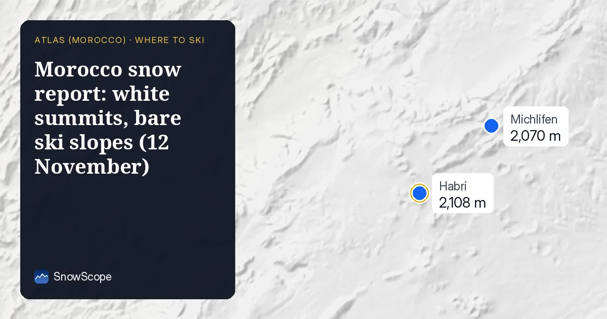
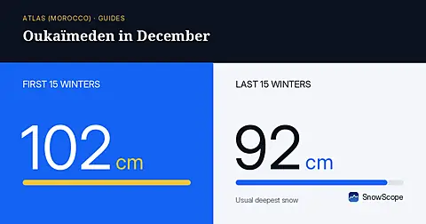
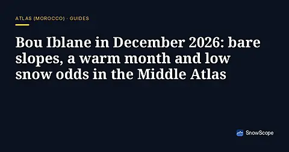
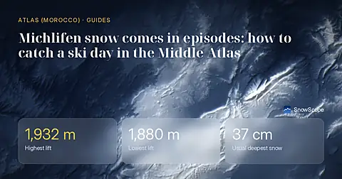
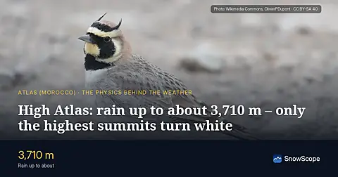

Snow reports · Atlas (Morocco)
Atlas (Morocco): Atlas snow report, 12 November. Atlas ski resorts today: no snow on the slopes. Snow only on the top summits: about 40 km² of white …
Morocco snow report: white summits, bare ski slopes (12 November)

Atlas snow report, 12 November. Atlas ski resorts today: no snow on the slopes. Snow only on the top summits: about 40 km² of white ground, 10 cm at most. The Atlas is small on a world map and large in our error bars: snow there is patchy and changes fast.
Today's snow map
Jbel Hebri: no snow seen on the slopes. Michlifen: bare slopes. Oukaïmeden: no snow seen on the slopes.
Snow-covered area: 60 km² on 10 November, 40 km² today, 30 km² forecast for 15 November. The map is getting less white.


December brings only 18 cm typical depth at mid-mountain in Oukaimeden, versus 53 cm in March. Early season is thin but possible. Data 13 November 2026.

On 15 December at Michlifen, 89% of winters are nearly bare. The best chance comes after a storm, not on the calendar. Data from 13 November 2026.

At Oukaïmeden ski resort in Morocco, a typical December 15 brings only 16 cm at mid-mountain. SnowScope shows odds from 46 winters of data.

Oukaïmeden is 50 km from Marrakech. December snow is thin and unpredictable: plan around storms, not the calendar. Data from 13 November 2026.

On 15 December, Oukaïmeden mid-mountain has 16 cm vs Val Thorens 89 cm. We checked lift prices. Data from 13 November 2026.


Two-week snow forecast for Atlas resorts shows virtually no new snow expected from 13 to 26 November. SnowScope maps data from 12 November.

Atlas snow report, 12 November. Atlas ski resorts today: no snow on the slopes. Snow only on the top summits: about 40 km² of white ground, 10 cm at …

No snow yet at Oukaïmeden on 12 November. The Atlas peaks sit bare; the winter season typically peaks in March with 58 cm at the top.

Only the highest peaks hold snow in the Atlas today: 20 km² white, 6 cm deep. The ski slopes are bare. Data from 11 November.

How low the snow came, when it left, and how this winter compares with 2008-09 and the dry years.

Only 8 cm of snow sits on the highest Atlas peaks today. No snow at any ski resort. Cover is shrinking fast through mid-November.

How much water the Atlas snow may hold in February 2027: the European seasonal forecast is about 3 °C warmer and wetter in the west and south, so snow odds stay low across Morocco's river basins.

January 2027 forecast for Morocco's Atlas: 69 million m³ of snow water expected, well below the usual 206. Data from 2026-11-10.

Bou Iblane stays bare into December. Seasonal forecast: 2.3°C warmer than usual, only 22 cm new snow expected, 0 cm lying on 31 December. Data: 10 November 2026.

Oukaimeden faces a warm December with 13 cm forecast on 31 December, well below the usual 26 cm. Data from 10 November 2026.


A practical notebook on Oukaïmeden in the High Atlas: when snow usually comes, how much, which slopes to aim for and how to get there from Marrakesh.

Michlifen, near Ifrane, has snow in short episodes rather than a season. What 46 past winters show, why the usual depth is zero, and how to be there on the right days.

Snow line near 3,710 m from 8 to 12 November: rain at Oukaïmeden and Imlil, snow on Toubkal's summit. Map and chart.
About 65 mm on Toubkal by 12 November, but the 0 °C level stays near 4,000 m: rain at Oukaïmeden and in the valleys, snow only on the top.

The Atlas ski resorts have no snow today. Only 80 km² of white ground remains on the highest peaks, with the deepest at 9 cm. Data from 7 November.